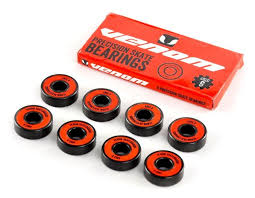

When it began
When and where skateboarding began but the person who paved the way for modern skateboarding is Larry stevenson he and a few others made advancements over the years this made skateboarding in to what it is today and i hope to educate you about that
Decks


Skateboard Deck is the part you put your feet on to ride the skateboard inevented by Larry stevenson to make surfing on land but the shape soon chsaged to become concave and that is the shape you see today

Trucks


Wheels


The first person to make some standard skateboard wheels was Frank noseworthy
after he saw someone else use those type of wheels he decided the
polyurethane wheels could be used aon a skateboard too!
There are two types of wheels you can use the larger wheels are better for
transition skateboarding where as the other small wheels are better for street skateboarding

Bearings


Bearings are mde of carbon steel and consists of three parts the outer race the inner race and the balls inside the bearings the bearings are attached to the trucks and go inside the wheels they are the reason your skateboard moves becuse they make the wheels of the skatebboard spin

Griptape

Suprisingly Griptape was not used until the 90s which then it was used i couldnt find the inventor of this one but Griptape is crucial if u want to stay on the skateboard as it provides the traction necessary between your feet and the skateboard